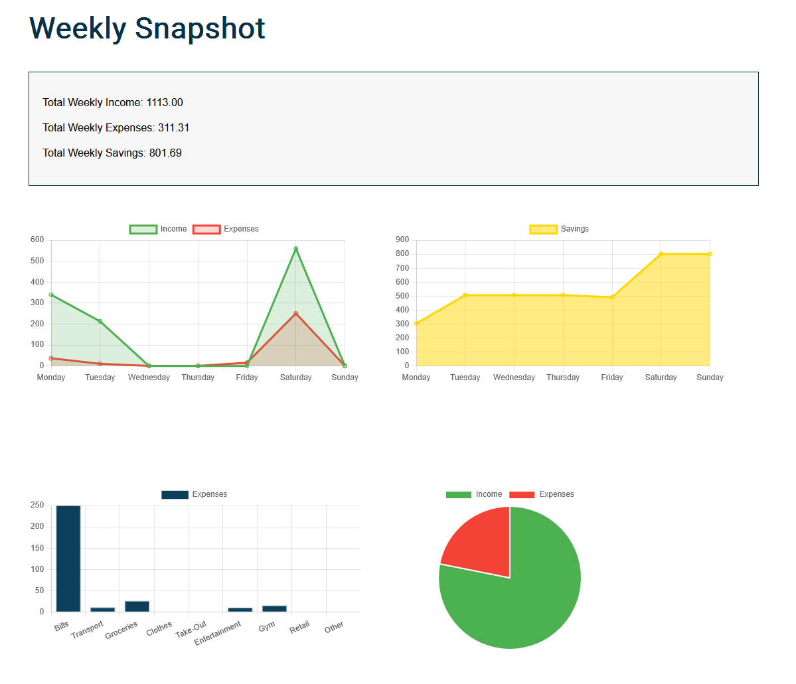
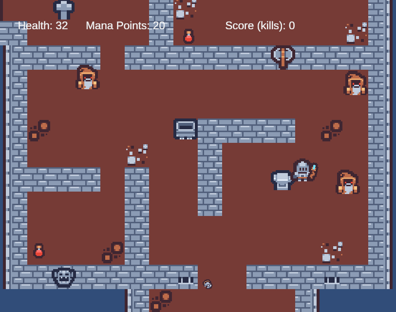

Portfolio
Dungeons & Dungeons & Dungeons
Overview: A Java command-line application designed to demonstrate scalable Object-Oriented Programming (OOP) principles, recursion, algorithmic logic, and data persistence.
Technical Decisions: As team lead, I built an extensible OOP hierarchy using inheritance and polymorphism. I implemented recursive data structures for uniform object processing and utilised CSV I/O for state tracking. To ensure the stability of these core systems, I integrated comprehensive unit testing across all game logic.

Personal Finance Dashboard
Overview: An offline-first financial dashboard that processes and visualises user income, expenses, and savings metrics in real-time without requiring server-side computation.
Technical Decisions: Built in vanilla ES6 JavaScript to demonstrate core DOM manipulation and state management without heavy frameworks. I utilised the browser's native Web Storage API for secure, zero-latency data persistence, and integrated Chart.js for dynamic data visualisation.

Counter Knights: Arcane Offensive
Overview: A WebGL Unity application demonstrating real-time vector maths, deterministic state management, and algorithmic recoil calculation.
Technical Decisions: Developed the game's underlying logic via Unity Visual Scripting, including AI state machines driven by ray-casting for line-of-sight. For the core combat loop, I developed a dynamic recoil system using real-time vector maths and time-decay mathematics.
